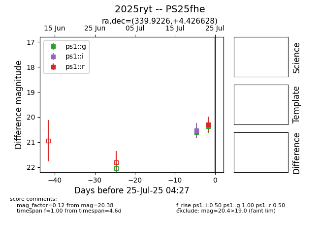

Target 2025ryt at 2025-07-25 04:27, see:
TNS: wis-tns.org/object/2025ryt
YSE: ziggy.ucolick.org/yse/transient_detail/2025ryt
alt names
2025ryt (yse,tns)
PS25fhe (panstarrs)
coordinates:
equatorial (ra, dec) = (339.9226,+4.42663)
galactic (l, b) = (72.6438,-45.19575)
photometry
last ps1::g=20.38, ps1::i=20.52, ps1::r=20.29
2 ps1::g, 1 ps1::i, 1 ps1::r detections
